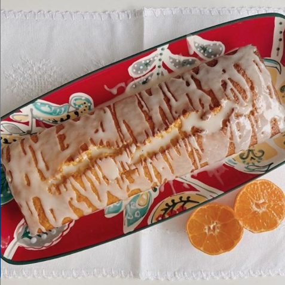
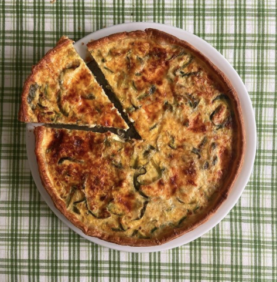
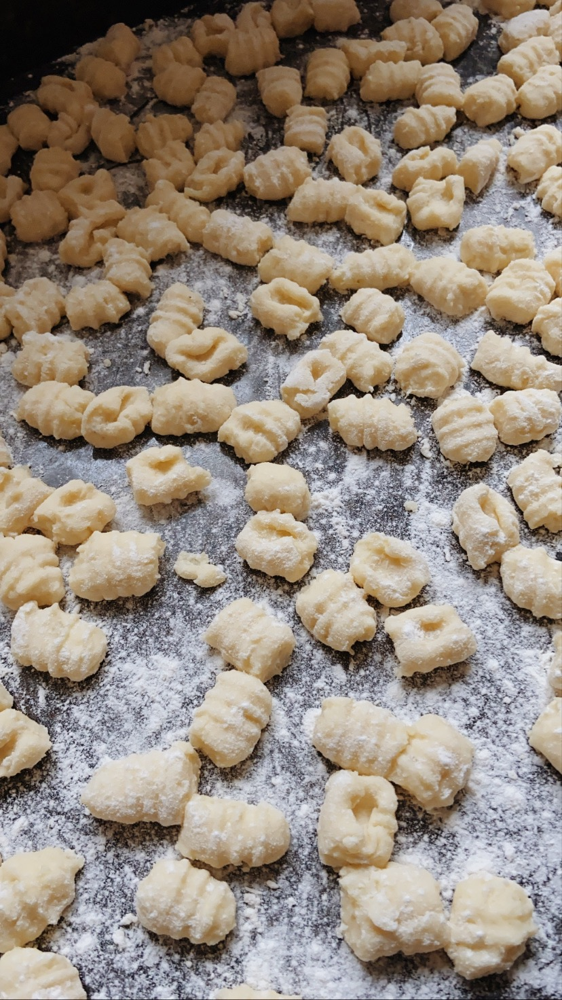

🍊Budín de Naranja

Ingredientes para el budín:
- 1 huevo
- 2 mandarinas
- 100cc de aceite girasol
- 1 taza de azúcar
- 1 taza y 1/2 de harina leudante
Procedimiento:
1️⃣ Precalentar el horno en 160º/170º.
2️⃣ Enmantecar y enharinar un molde.
3️⃣ Poner en la licuadora el aceite, el huevo, el azúcar, 1 mandarina entera (sin semillas y con cáscara), el jugo de la otra mandarina. Licuar hasta que se deshaga toda la mandarina.
4️⃣ Colocar la mezcla en un bowl aparte y agregar la harina con movimientos envolventes.
5️⃣ Verter la mezcla en el molde y hornear durante 45 minutos a fuego moderado (160º/170º).
6️⃣ Desmoldar y dejar enfriar sobre una rejilla.
7️⃣ Glaseado: en un bowl poner el azúcar impalpable e ir agregando de a poco jugo de mandarina hasta lograr la consistencia deseada. Verterlo sobre el budín y disfrutar con un rico té☕.
🤍Glaseado: 100gr de azúcar impalpable y jugo de mandarina cantidad necesaria.
💚Tarta de Zapallito

Ingredientes para la tarta:
- 4 zapallitos medianos
- 3 cebollas
- 1/4 de morrón rojo
- 1/4 de morrón verde
- 4 huevos
- 150 gr de queso fresco o mozzarella
- 100 gr de queso rallado
- Sal y pimienta
- Aceite cantidad necesaria
- 1 tapa para tartas
Procedimiento:
1️⃣ Cortar los zapallitos en rodajas finas, la cebolla y los morrones en juliana.
2️⃣ Una vez que los tengamos, vamos a poner en una sartén un poco de aceite y salteamos la cebolla, el morron y los zapallitos por unos diez minutos aproximadamente, hasta que estén tiernos.
3️⃣ Retiramos el agua excedente, sino la tarta va a quedar aguada.
4️⃣ Salpimentar.
5️⃣ En un bowl mezclamos los huevos con el queso rayado y luego incorporamos el queso fresco cortado en cubos.
6️⃣ Cuando las verduras estén tibias, mezclamos con el resto de los ingredientes.
7️⃣ En una tartera, extendemos la tapa de la tarta, pinchamos con un tenedor y vertemos la preparación.
8️⃣ Cocinar en horno precalentado a 180º entre 25 y 30 minutos.
🥔 Ñoquis de Papa

Ingredientes para los ñoquis:
- 1 kilogramo de papas
- 300 gramos de harina 0000
- 2 yemas de huevo
- 50gr de queso rallado
- 1 pizca de pimienta negr
- 1 cucharada postre de sal fina
- 1 cucharadita de nuez moscada
- 1 puñado de sal gruesa para cocinar las papas
- Aceite cantidad necesaria
- 1 tapa para tartas
Procedimiento:
1️⃣ Alistamos todos los ingredientes para preparar la masa de los famosos ñoquis de papa caseros.
2️⃣ Lavamos bien las papas y las cocinamos con la piel en una cacerola con agua y sal. Este es el detalle que queríamos destacar para saber cómo hacer ñoquis perfectos, puesto que las papas con cáscara absorben menos agua durante la cocción y, de esta manera, necesitarán menos cantidad de harina a la hora de preparar la masa de los ñoquis argentinos.
3️⃣ Una vez que las papas estén tiernas, las retiramos de la cacerola y las pelamos. Para facilitar este procedimiento puedes pincharlas con un tenedor y quitarles la piel con un cuchillo.
4️⃣ Cuando hayamos pelado todas las papas, las colocamos en un bowl y las trituramos con un pasapurés. Si las papas están calientes mucho mejor, porque se pueden pisar con más facilidad.
5️⃣ Una vez que hayamos pisado bien las papas, incorporamos las yemas, el queso rallado, sal, pimienta y nuez moscada para elaborar los ñoquis caseros. Mezclamos todos los ingredientes con las manos.
Es muy importante añadir los ingredientes en este orden para que la receta de ñoquis de papa quede perfecta.
6️⃣ Comenzamos a agregarle la harina poco a poco y, cuando la masa para los ñoquis caseros fáciles comience a tomar consistencia, la volcamos sobre la mesada para trabajar con más comodidad.
7️⃣ Amasamos lo suficiente hasta formar una masa tierna y consistente.
8️⃣ Tomamos porciones pequeñas de masa y vamos formando rollos finos y largos.
9️⃣ Cortamos los ñoquis caseros de aproximadamente 2 centímetros y medio de largo, dejándolos sobre la mesa enharinada para que no se peguen. Luego, los pasamos por los dientes de un tenedor haciendo una leve presión con el dedo pulgar.
1️⃣0️⃣ Mientras tanto, colocamos al fuego una olla con abundante agua y un puñado de sal gruesa. Cuando esta rompa a hervir, incorporamos los ñoquis caseros con cuidado. A medida que vayan subiendo a la superficie estarán listos y podremos retirarlos con una espumadera. Y si ahora que sabes cómo hacer ñoquis prefieres congelarlos para cocinarlos en otro momento, puedes hacerlo en un recipiente adecuado o bolsa de congelación, antes de hervirlos.